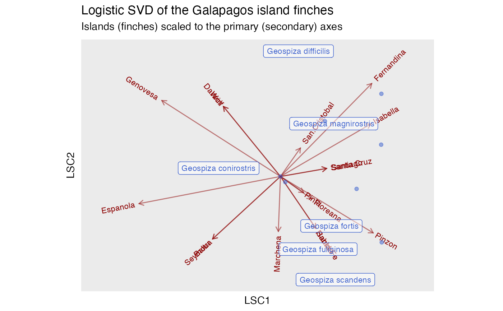
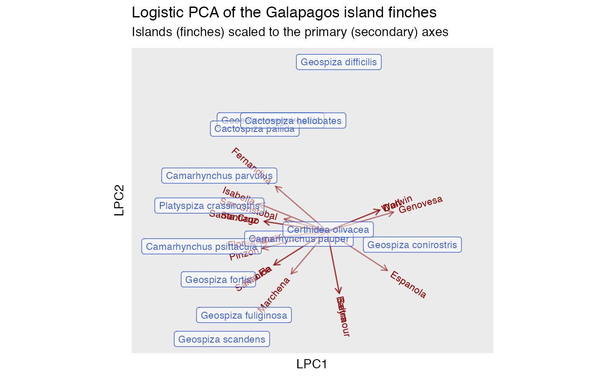
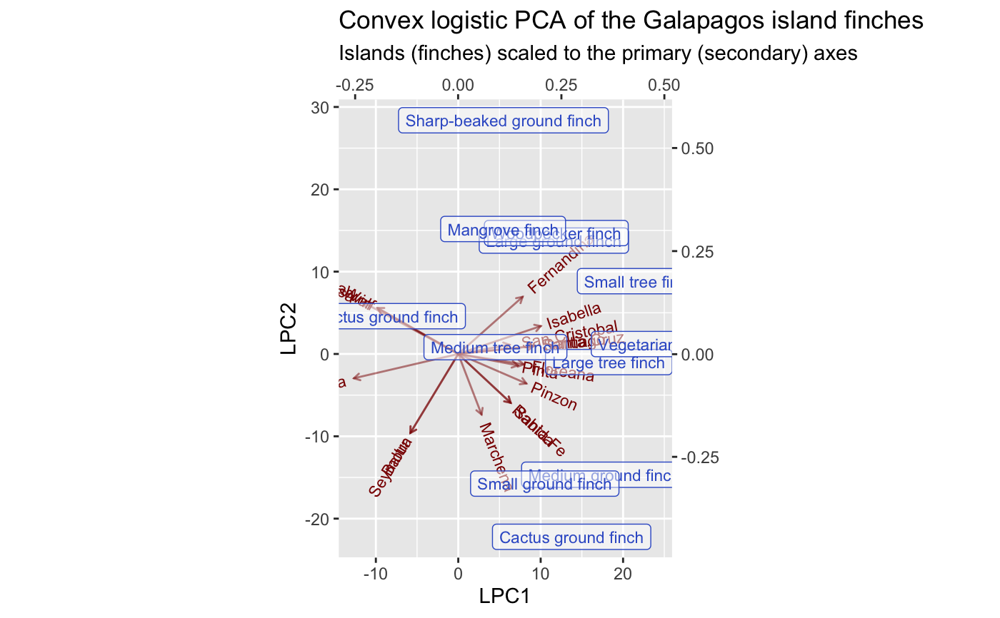

methods-lpca.RdThese methods extract data from, and attribute new data to,
objects of class "lpca" and "lsvd" from the
logisticPCA package. The signature
functions logisticPCA::logisticPCA(), logisticPCA::logisticSVD(), and
logisticPCA::convexLogisticPCA() have *_ord() wrappers that add row and
column names from the input matrix to the output matrices.
# S3 method for lsvd
as_tbl_ord(x)
# S3 method for lsvd
recover_rows(x)
# S3 method for lsvd
recover_cols(x)
# S3 method for lsvd
recover_coord(x)
# S3 method for lsvd
augmentation_rows(x)
# S3 method for lsvd
augmentation_cols(x)
# S3 method for lsvd
augmentation_coord(x)
# S3 method for lpca
as_tbl_ord(x)
# S3 method for lpca
recover_rows(x)
# S3 method for lpca
recover_cols(x)
# S3 method for lpca
recover_coord(x)
# S3 method for lpca
augmentation_rows(x)
# S3 method for lpca
augmentation_cols(x)
# S3 method for lpca
augmentation_coord(x)
# S3 method for clpca
as_tbl_ord(x)
# S3 method for clpca
recover_rows(x)
# S3 method for clpca
recover_cols(x)
# S3 method for clpca
recover_coord(x)
# S3 method for clpca
augmentation_rows(x)
# S3 method for clpca
augmentation_cols(x)
# S3 method for clpca
augmentation_coord(x)An ordination object.
# site-species data frame of Sanderson Galapagos finches data
data(finches, package = "cooccur")
class(finches)
#> [1] "data.frame"
finches[seq(6L), seq(6L)]
#> Seymour Baltra Isabella Fernandina Santiago Rabida
#> Geospiza magnirostris 0 0 1 1 1 1
#> Geospiza fortis 1 1 1 1 1 1
#> Geospiza fuliginosa 1 1 1 1 1 1
#> Geospiza difficilis 0 0 1 1 1 0
#> Geospiza scandens 1 1 1 0 1 1
#> Geospiza conirostris 0 0 0 0 0 0
# logistic singular value decomposition
finches %>% t() %>%
logisticSVD_ord() %>%
as_tbl_ord() %>%
print() -> finches_lsvd
#> rARPACK must be installed to use partial_decomp
#> # A tbl_ord of class 'lsvd': (17 x 2) x (13 x 2)'
#> # 2 coordinates: LSC1 and LSC2
#> #
#> # Rows: [ 17 x 2 | 0 ]
#> LSC1 LSC2 |
#> |
#> 1 -29.6 -27.3 |
#> 2 -29.6 -27.3 |
#> 3 39.4 22.9 |
#> 4 39.9 40.6 |
#> 5 20.2 3.50 |
#>
#> #
#> # Columns: [ 13 x 2 | 0 ]
#> LSC1 LSC2 |
#> |
#> 1 0.233 0.231 |
#> 2 0.223 -0.216 |
#> 3 0.164 -0.318 |
#> 4 0.0787 0.548 |
#> 5 0.240 -0.451 |
#>
# summarize ordination
glance(finches_lsvd)
#> # A tibble: 1 × 7
#> rank n.row n.col inertia prop.var.1 prop.var.2 class
#> <int> <int> <int> <dbl> <lgl> <lgl> <chr>
#> 1 2 17 13 NA NA NA lsvd
# recover row and column singular vectors
get_rows(finches_lsvd)
#> LSC1 LSC2
#> Seymour -29.6262671 -27.292836
#> Baltra -29.6262671 -27.292836
#> Isabella 39.4314874 22.927636
#> Fernandina 39.8768982 40.613511
#> Santiago 20.1536654 3.503292
#> Rabida 15.4603101 -22.650661
#> Pinzon 40.5096442 -24.660902
#> Santa.Cruz 20.1536654 3.503292
#> Santa.Fe 15.4603101 -22.650661
#> San.Cristobal 8.7235247 12.421222
#> Espanola -61.7590052 -11.873004
#> Floreana 13.6420482 -9.833823
#> Genovesa -51.8042665 33.189084
#> Marchena -0.9206994 -23.984187
#> Pinta 10.1096479 -7.046090
#> Darwin -24.8923482 30.563483
#> Wolf -24.8923482 30.563483
get_cols(finches_lsvd)
#> LSC1 LSC2
#> Geospiza magnirostris 0.23272839 0.23084971
#> Geospiza fortis 0.22266425 -0.21621915
#> Geospiza fuliginosa 0.16417675 -0.31757704
#> Geospiza difficilis 0.07874014 0.54780935
#> Geospiza scandens 0.24004813 -0.45074613
#> Geospiza conirostris -0.27006945 0.03652519
#> Camarhynchus psittacula 0.44241704 -0.28775708
#> Camarhynchus pauper 0.02115053 -0.02454548
#> Camarhynchus parvulus 0.43989011 0.13896548
#> Platyspiza crassirostris 0.33265957 -0.05424971
#> Cactospiza pallida 0.44093325 0.36126149
#> Cactospiza heliobates 0.19435918 0.24151680
#> Certhidea olivacea 0.00000000 0.00000000
# augment ordination with point names and main effect estimates
augment_ord(finches_lsvd)
#> # A tbl_ord of class 'lsvd': (17 x 2) x (13 x 2)'
#> # 2 coordinates: LSC1 and LSC2
#> #
#> # Rows: [ 17 x 2 | 1 ]
#> LSC1 LSC2 | .name
#> | <chr>
#> 1 -29.6 -27.3 | 1 Seymour
#> 2 -29.6 -27.3 | 2 Baltra
#> 3 39.4 22.9 | 3 Isabella
#> 4 39.9 40.6 | 4 Fernandina
#> 5 20.2 3.50 | 5 Santiago
#> # … with 12 more rows
#> #
#> # Columns: [ 13 x 2 | 2 ]
#> LSC1 LSC2 | .name .mu
#> | <chr> <dbl>
#> 1 0.233 0.231 | 1 Geospiza magnirostris 9.02
#> 2 0.223 -0.216 | 2 Geospiza fortis 5.97
#> 3 0.164 -0.318 | 3 Geospiza fuliginosa 9.86
#> 4 0.0787 0.548 | 4 Geospiza difficilis 6.88
#> 5 0.240 -0.451 | 5 Geospiza scandens 5.85
#> # … with 8 more rows
# summarize artifical coordinates (inertia is undefined)
tidy(finches_lsvd)
#> # A tibble: 2 × 3
#> .name .inertia .prop_var
#> <fct> <dbl> <dbl>
#> 1 LSC1 NA NA
#> 2 LSC2 NA NA
# biplot (inertia is not defined and cannot be conferred)
finches_lsvd %>%
augment_ord() %>%
ggbiplot(aes(label = .name), sec.axes = "cols", scale.factor = 100) +
theme_biplot() +
geom_rows_vector(alpha = .5, color = "darkred") +
geom_rows_text_radiate(size = 3, color = "darkred") +
geom_cols_label(size = 3, alpha = .5, color = "royalblue3",
subset = grep("Geospiza", rownames(finches))) +
geom_cols_point(alpha = .5, color = "royalblue3",
subset = -grep("Geospiza", rownames(finches))) +
ggtitle(
"Logistic SVD of the Galapagos island finches",
"Islands (finches) scaled to the primary (secondary) axes"
) +
expand_limits(x = c(-80, 60))

# logistic principal components analysis
finches %>% t() %>%
logisticPCA_ord() %>%
as_tbl_ord() %>%
print() -> finches_lpca
#> # A tbl_ord of class 'lpca': (17 x 2) x (13 x 2)'
#> # 2 coordinates: LPC1 and LPC2
#> #
#> # Rows: [ 17 x 2 | 0 ]
#> LPC1 LPC2 |
#> |
#> 1 2.02 -10.4 |
#> 2 2.02 -10.4 |
#> 3 -11.5 4.62 |
#> 4 -8.64 7.51 |
#> 5 -10.6 1.65 |
#>
#> #
#> # Columns: [ 13 x 2 | 0 ]
#> LPC1 LPC2 |
#> |
#> 1 -0.190 0.372 |
#> 2 -0.365 -0.162 |
#> 3 -0.279 -0.281 |
#> 4 0.0389 0.568 |
#> 5 -0.353 -0.361 |
#>
# summarize ordination
glance(finches_lpca)
#> # A tibble: 1 × 7
#> rank n.row n.col inertia prop.var.1 prop.var.2 class
#> <int> <int> <int> <dbl> <lgl> <lgl> <chr>
#> 1 2 17 13 NA NA NA lpca
# recover row and column singular vectors
get_rows(finches_lpca)
#> LPC1 LPC2
#> Seymour 2.023724 -10.397181
#> Baltra 2.023724 -10.397181
#> Isabella -11.462282 4.617838
#> Fernandina -8.637309 7.509191
#> Santiago -10.550473 1.647684
#> Rabida -8.918118 -5.646950
#> Pinzon -10.861505 -2.893910
#> Santa.Cruz -10.550473 1.647684
#> Santa.Fe -8.918118 -5.646950
#> San.Cristobal -7.180472 2.053474
#> Espanola 10.051180 -6.573739
#> Floreana -9.366138 -1.305495
#> Genovesa 11.075964 3.191334
#> Marchena -6.024405 -7.139011
#> Pinta -8.607086 -1.105356
#> Darwin 8.792960 3.551285
#> Wolf 8.792960 3.551285
get_cols(finches_lpca)
#> LPC1 LPC2
#> Geospiza magnirostris -0.189800528 0.371915613
#> Geospiza fortis -0.364934928 -0.161504893
#> Geospiza fuliginosa -0.279019414 -0.281019273
#> Geospiza difficilis 0.038879072 0.567699286
#> Geospiza scandens -0.353121630 -0.361419110
#> Geospiza conirostris 0.285375412 -0.044993792
#> Camarhynchus psittacula -0.421250115 -0.050723706
#> Camarhynchus pauper -0.094881516 -0.025017347
#> Camarhynchus parvulus -0.361714230 0.186507607
#> Platyspiza crassirostris -0.394965465 0.086079284
#> Cactospiza pallida -0.242923359 0.344130010
#> Cactospiza heliobates -0.113976114 0.371269248
#> Certhidea olivacea 0.003074768 0.005710544
# augment ordination with point names and main effect estimates
augment_ord(finches_lpca)
#> # A tbl_ord of class 'lpca': (17 x 2) x (13 x 2)'
#> # 2 coordinates: LPC1 and LPC2
#> #
#> # Rows: [ 17 x 2 | 1 ]
#> LPC1 LPC2 | .name
#> | <chr>
#> 1 2.02 -10.4 | 1 Seymour
#> 2 2.02 -10.4 | 2 Baltra
#> 3 -11.5 4.62 | 3 Isabella
#> 4 -8.64 7.51 | 4 Fernandina
#> 5 -10.6 1.65 | 5 Santiago
#> # … with 12 more rows
#> #
#> # Columns: [ 13 x 2 | 2 ]
#> LPC1 LPC2 | .name .mu
#> | <chr> <dbl>
#> 1 -0.190 0.372 | 1 Geospiza magnirostris 3.00
#> 2 -0.365 -0.162 | 2 Geospiza fortis 1.10
#> 3 -0.279 -0.281 | 3 Geospiza fuliginosa 1.91
#> 4 0.0389 0.568 | 4 Geospiza difficilis 1.79
#> 5 -0.353 -0.361 | 5 Geospiza scandens -0.451
#> # … with 8 more rows
# summarize artifical coordinates (inertia is undefined)
tidy(finches_lpca)
#> # A tibble: 2 × 3
#> .name .inertia .prop_var
#> <fct> <dbl> <dbl>
#> 1 LPC1 NA NA
#> 2 LPC2 NA NA
# biplot (inertia is not defined and cannot be conferred)
finches_lpca %>%
augment_ord() %>%
ggbiplot(aes(label = .name), sec.axes = "cols", scale.factor = 50) +
theme_biplot() +
geom_rows_vector(alpha = .5, color = "darkred") +
geom_rows_text_radiate(size = 3, color = "darkred") +
geom_cols_label(size = 3, alpha = .5, color = "royalblue3",
subset = grep("Geospiza", rownames(finches))) +
geom_cols_point(alpha = .5, color = "royalblue3",
subset = -grep("Geospiza", rownames(finches))) +
ggtitle(
"Logistic PCA of the Galapagos island finches",
"Islands (finches) scaled to the primary (secondary) axes"
) +
expand_limits(x = c(-30, 25))

# convex logistic PCA, omitting ubiquitous finches
finches %>%
dplyr::filter(dplyr::if_any(where(is.integer), ~ . == 0)) %>%
t() %>%
convexLogisticPCA_ord() %>%
as_tbl_ord() %>%
print() -> finches_clpca
#> # A tbl_ord of class 'clpca': (17 x 2) x (12 x 2)'
#> # 2 coordinates: LPC1 and LPC2
#> #
#> # Rows: [ 17 x 2 | 0 ]
#> LPC1 LPC2 |
#> |
#> 1 -5.81 -9.59 |
#> 2 -5.81 -9.59 |
#> 3 10.0 3.39 |
#> 4 7.81 6.94 |
#> 5 9.14 0.958 |
#>
#> #
#> # Columns: [ 12 x 2 | 0 ]
#> LPC1 LPC2 |
#> |
#> 1 0.232 0.275 |
#> 2 0.355 -0.293 |
#> 3 0.210 -0.315 |
#> 4 0.110 0.568 |
#> 5 0.275 -0.444 |
#>
# summarize ordination
glance(finches_clpca)
#> # A tibble: 1 × 7
#> rank n.row n.col inertia prop.var.1 prop.var.2 class
#> <int> <int> <int> <dbl> <lgl> <lgl> <chr>
#> 1 2 17 12 NA NA NA clpca
# recover row and column singular vectors
get_rows(finches_clpca)
#> LPC1 LPC2
#> Seymour -5.808312 -9.5867231
#> Baltra -5.808312 -9.5867231
#> Isabella 10.011892 3.3861344
#> Fernandina 7.810786 6.9392592
#> Santiago 9.141178 0.9575415
#> Rabida 6.359886 -5.9335427
#> Pinzon 8.263273 -3.5840566
#> Santa.Cruz 9.141178 0.9575415
#> Santa.Fe 6.359886 -5.9335427
#> San.Cristobal 6.217594 1.1154622
#> Espanola -12.656243 -2.9519295
#> Floreana 7.959382 -1.2593863
#> Genovesa -11.601601 6.3122697
#> Marchena 2.827927 -7.3485368
#> Pinta 7.237792 -1.3919446
#> Darwin -9.790962 5.5775300
#> Wolf -9.790962 5.5775300
get_cols(finches_clpca)
#> LPC1 LPC2
#> Geospiza magnirostris 0.23203722 0.27543446
#> Geospiza fortis 0.35452323 -0.29336613
#> Geospiza fuliginosa 0.20994515 -0.31489069
#> Geospiza difficilis 0.10973820 0.56769976
#> Geospiza scandens 0.27513825 -0.44414060
#> Geospiza conirostris -0.22632981 0.09184247
#> Camarhynchus psittacula 0.36544810 -0.01974009
#> Camarhynchus pauper 0.09019874 0.01656979
#> Camarhynchus parvulus 0.44149495 0.17687426
#> Platyspiza crassirostris 0.48204454 0.02407893
#> Cactospiza pallida 0.23792332 0.29368577
#> Cactospiza heliobates 0.10883916 0.30357411
# augment ordination with point names and main effect estimates
augment_ord(finches_clpca)
#> # A tbl_ord of class 'clpca': (17 x 2) x (12 x 2)'
#> # 2 coordinates: LPC1 and LPC2
#> #
#> # Rows: [ 17 x 2 | 1 ]
#> LPC1 LPC2 | .name
#> | <chr>
#> 1 -5.81 -9.59 | 1 Seymour
#> 2 -5.81 -9.59 | 2 Baltra
#> 3 10.0 3.39 | 3 Isabella
#> 4 7.81 6.94 | 4 Fernandina
#> 5 9.14 0.958 | 5 Santiago
#> # … with 12 more rows
#> #
#> # Columns: [ 12 x 2 | 2 ]
#> LPC1 LPC2 | .name .mu
#> | <chr> <dbl>
#> 1 0.232 0.275 | 1 Geospiza magnirostris 1.54
#> 2 0.355 -0.293 | 2 Geospiza fortis 1.18
#> 3 0.210 -0.315 | 3 Geospiza fuliginosa 1.54
#> 4 0.110 0.568 | 4 Geospiza difficilis 0.357
#> 5 0.275 -0.444 | 5 Geospiza scandens 0.875
#> # … with 7 more rows
# summarize artifical coordinates (inertia is undefined)
tidy(finches_clpca)
#> # A tibble: 2 × 3
#> .name .inertia .prop_var
#> <fct> <dbl> <dbl>
#> 1 LPC1 NA NA
#> 2 LPC2 NA NA
# biplot (inertia is not defined and cannot be conferred)
finches_clpca %>%
augment_ord() %>%
ggbiplot(aes(label = .name), sec.axes = "cols", scale.factor = 50) +
theme_biplot() +
geom_rows_vector(alpha = .5, color = "darkred") +
geom_rows_text_radiate(size = 3, color = "darkred") +
geom_cols_label(size = 3, alpha = .5, color = "royalblue3",
subset = grep("Geospiza", rownames(finches))) +
geom_cols_point(alpha = .5, color = "royalblue3",
subset = -grep("Geospiza", rownames(finches))) +
ggtitle(
"Convex logistic PCA of the Galapagos island finches",
"Islands (finches) scaled to the primary (secondary) axes"
) +
expand_limits(x = c(-25, 35))
